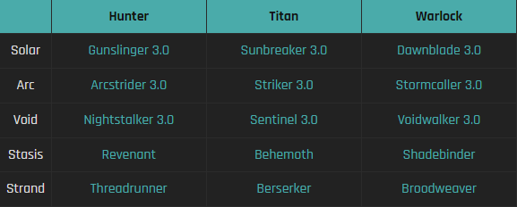

Here is the Slide for the midterm play assessment that was presented to the class. These slides bring the first three play logs into one and analyze them all together.
Log 1
The game that I will be analyzing for this first play log will be Rust. Rust is a first person survival game developed by Facepunch studios. Rust was released back in December of 2013 and is slowly coming up on its 10 year anniversary. You can play this game on any platform but it is highly preferred to be played on PC. The objective of this game is to survive, similar to games such as Ark: Survival Evolved and DayZ, Rust aims to create a hostile and dangerous environment with wild bears, wolves, various NPCs and dungeon-like encounters. Since rust is a multiplayer game the main danger are other live players that pose a threat to your base and you. Once you spawn on an procedurally generated island you are presented with only a rock and a torch to light the way. As night comes quickly and you rush around mining trees and rocks to get a base down.
Once nights come darkness engulfs everything to the point where you can’t even see your hands so you're forced to stay in your 2x2 hut made of wood until morning. You venture around in the morning and find various areas of interest including a camp of Bandit NPCs that sell various items to help you in the wipe. There is not a main step by step story mode in the game. Likewise minecraft when you defeat the enderdragon they roll the credits and you presume the game to end but you just respawn in your bed and can do whatever the heart desires. In Rust there are no roll credits and with the inclusion of other players that you can encounter the idea can become way more broad with what you can do. People have made movies of Rust gameplay featuring all sorts of storylines created by themselves. Aesthetically the game is more realistic looking and how the game acts with fall damage, temperature, and radiation.
The game flows completely free, different from games such as minecraft where you have a sort of safety in the day but hostile animals and NPCs spawn no matter what or where. The traditional use of “WASD” are used as the traditional movement keys with keys to craft basic things such as small chests A “Tool Cupboard” which is used to lock down a certain area where it is placed so no else that isn't registered with that “TC” may build anything, with the exception of ladders which are used for raids. There are many coined terms that are used in Rust that are unique to the game such as Naked: Someone without clothing or with very little, either a new spawn or grub. Bow Kid: Someone with a bow, usually a primitive kit. Hazzy: Hazmat Suit which can be obtained at various players across the map,
But more often referred to someone wearing a hazmat suit. Boom: explosives of any kind, be that explo ammo, rockets, satchels, grenades or c4. Door Camp or Roof Camp: refers to an enemy or yourself that camps at either a roof or ground entrance to a base and waits until the other leaves the house and kills them. Headshot Hit: refers to when someone shoots a person in the head then in the body once meaning they are low HP.
Here is an example of a procedurally generated map on a server. You can also see of there are named areas of interest such as Outpost or Bandit Camp which are safe zones where you can meet others safely and trade with NPCs.
Pictured is an example of where you can randomly spawn on the island with only A rock and Torch.
Log 2
The game that I analyzed this week is Lego Star Wars Skywalker Saga which was released on October 20, 2020. The game is developed by TT Games and is available on various platforms. The game is a retelling of all nine Skywalker Saga movies through the lens of Lego Star Wars. The rules are simple and easy to understand. The player controls a variety of characters and navigates through various levels. The game's main objective is to collect Lego studs, unlock new characters, complete levels, and progress through the 9 Star Wars movies.
The mechanics of Lego Star Wars are similar to other Lego video games. The player can jump, shoot, and use Force to defeat enemies and solve puzzles. The game also features a co-op mode where two players can play together. Players can switch between characters and use abilities to progress through levels. The player moves by traveling from point A to point B, overcoming obstacles, solving puzzles, and battling enemies along the way.
The art of The Skywalker Saga is visually stunning. With a fresh new look from the older games that were released throughout the last two decades. The game's environments and characters are designed to look like Lego toys, providing a unique and appealing visual style. The game's cutscenes are also well-animated and provide a humorous take on the Star Wars movies. The game's aesthetics are unique and appealing, providing a fun and entertaining experience for players.
The interface is clean and easy to navigate, with the menu system straightforward and the in-game HUD providing all necessary information. Navigation through the game is straightforward, with the player moving through levels, solving puzzles, and defeating enemies to reach the end of each level, aided by a map system that displays the different levels and objectives. The player interacts with the system through a combination of buttons, sticks, and touch inputs, depending on the platform being used. The game also features a map that displays the different levels and objectives,
making it easy for players to keep track of their progress.
Lego Star Wars: The Skywalker Saga is a well-designed game that appeals to both Star Wars fans and Lego fans while providing simple rules, mechanics, interface, and navigation that make it easy for players to play the game.
]
This revamped menu had each movie to select from with cute little animations that play when you hover over it.
Log 3
For this third assignment I wanted to take a detour and analyze a game that I haven’t played or know much about. Your Only Move is Hustle is a brand new game that just released February 2nd. A new genre for me especially and a lot of people. As the publisher describes it is a “Online turn-based fighting game” and creative sandbox. It takes the classic fighting style and adds the twist of Chess as many have said.
The indie developer Ivy Sly’s first game was published to Steam and became a massive hit. Within the game there are 4 characters at this moment.
The Ninja, cowboy, Wizard, and Robot. The ninja focuses on getting close range with its dashes and moves to damage close, while the Wizard uses spells from afar and flies across the stage. The Cowboy lassos its enemies from afar to set up combos and execute moves. Finally the robot uses his various abilities ranging from mini earthquakes to shock blasts to defeat the opponent.
The game design is very simple with its character designs. The ninja just looks like a normal stick figure until he moves and contorts his body, throwing all sorts of things at the other player. The Wizard is shaped to be a chess piece, the Cowboy carries a sword and the Robot is large and square shaped. There are not currently any different themed stages, The game also features mod support with insane amounts of people publishing mods and new characters.
The game also features a replay save feature that allows you to save full fights that you made in the singleplayer mode. The multiplayer mode is server creation based where players can create and make brackets with up to 16 players to compete against each other.
Here is my first one that I made when I bought the game. With the vanilla characters Cowboy and Ninja. This example I downloaded a modded character (Fallen "Long Sword" vs. Kali "Red Sword")
Log 4
Act I:Introduction
Destiny 2 is a massive online multiplayer first person shooter game. Nominated for dozens and awards each year. It was originally released in 2017 and was a direct sequel to Destiny. With almost 1800 hours combined across multiple accounts and both games I would say that I am a veteran and huge fan.You are a guardian, defender of the Last City of humanity in a solar system under siege by various enemies of the Darkness. Destiny features 5 main expansions that have been built upon the story since the launch of the game. In between each expansion there are seasonal stories that take place throughout the physical year until the next major expansion. The game features raids, dungeons, and dozens of more activities with up to six people that can accompany you. Some backstory before we begin. Far into the future when humans land a manned spacecraft onto Mars they discover a paracausal being named to be the Traveler by the human race. Over time the traveler causes a golden age in humanity’s technology and way of life. Allowing humans to travel through space with ease, expanding human lifespan and helping humanity colonize other planets such as Venus, Mars, Mercury, The Moon, Neptune and other moons across “Sol”. But the Traveler had enemies chasing it across the universe for a very long time. Thus ending the golden age when humans had to defend the Traveler and Sol. The Traveler then takes a protective measure and creates the “Ghost” to awaken dead warriors that wield the light the fight and take back Sol. The Last City is commanded by three “Vanguards’. Ikora the Warlock vanguard, Zavala The Titan Vanguard and Cayde-6 the Hunter vanguard, who were killed in the Forsaken expansion.
Act II:Story and Music Score
I will be focusing on the 4th major expansion that was released, The Witch Queen. The Witch Queen was released on February 22, 2022 and featured dozens of new additions to the game including true weapon crafting and more. The Witch Queen or Savathûn, who along with her siblings Oryx, The Taken King, and Xivu Arath the Hive God of War, lead the Hive, which are an undead species that serve the paracausal Worm Gods that are tied closely with the Darkness and its Pyramids. With Oryx being killed in his ascendant plane, where he is truly dead. Unlike her siblings' focus on combat, Savathûn's methods to serve the Worm Gods had been based on subterfuge and trickery, and had taken steps to prevent the Vanguard from contacting the Darkness as it entered the Solar System. During the events of Beyond Light a year ago, Savathûn had further manipulated the Vanguard. She claimed to have rescued a weakened Osiris from Xivu Arath from within the Ascendant Realm (a different realm that is accessed by various powerful entities in the universe). She then took his form to influence the Vanguard into taking in Crow (vanguard operative) and making strategic alliances with factions of the Cabal (enemy of the Last City) and Eliksni(both enemies of the Last City). The planet Mars has suddenly reappeared after being taken by the Darkness over a year ago.. The Vanguard and Ikora Rey's Hidden (intelligence agents) explore the planet. Ikora and Eris Morn discover evidence of more Darkness artifacts sent by the Pyramids. Aboard, they discover that Savathûn is now able to wield the power of Light and uses that to infuse her Hive warriors, known as the Lucent Brood, with powers similar to that of the Guardians. Later down the line the Guardian finds and defeats Savathûn in her throne world on her ship but she narrowly escapes to the Last City where she dies in front of the Traveler. You can’t play Destiny and not talk about the music. The scores of Destiny are a sight to behold of itself.
Act III: Characters, Class System, Exploration, and Gameplay
There are three classes that you can select from; Titan, Warlock, and Hunter. The Titan focuses on aggressive assaults and impenetrable defenses. Warlocks channel the mysteries of the universe to decimate their enemies. Hunters are nimble and quick but can also deal devastating damage to enemies. Each class is equipped with 5 Subclasses that each have multiple grenades to choose from, your class specific ability that can be Dodge for the hunter, a shield for the Titan, or a Rift that can heal or do extra damage and your melee ability that varies per class. Each of the subclasses for the Titan are Sentinel shield which places a void powered bubble around you that protects you and allies from incoming damage. The Thundercrash uses Arc energy that charges the player with energy and blasts off from the ground and slams into enemies dealing loads of damage. The Hammer of Sol uses Solar power to charge a hammer with solar power that can be thrown to decimate enemies around you. The Glacial Quake is a darkness super that uses ice powers that can freeze and crush enemies in its wake. Finally the Bladefury is a darkness super that harnesses Strand to suspend and unravel enemies life force into nothingness. The hunter supers consist of the Arc Staff where the player can jump around and dodge to enemies to slash and bash enemies, the Golden Gun is a Solar powered gun that shoots super charged shots, THe Nightstalker can use the Shadow Shot that harnesses void to shoot a bow and arrow that grabs and stuns enemies. The Revenant uses Silence and Squall to throw freezing scythes that transform into freeze storm that freeze enemies, lastly for the hunter is Silkstrike, this uses a kunai attached to a thread to weave and toss at enemies. Finally the Warlock has Dawnblade where they can use Daybreak and Well of Radiance. Dawnblade summons a solar blade that can be thrown at enemies. Well of Radiance converts that sword into a large circle (Well) that can heal and give damage amps to players that stand in it. The Voidwalker uses a Nova bomb that creates a giant vortex that deals massive damage and destroys anything in its path. The Stormcaller uses a stormtrance that allows you to channel arc energy into your (pretty much palpatine), the Chaos Reach allows you to channel that power into one large energy blast. The Shadebinder allows you to summon an ice staff to freeze enemies using Winter’s Wrath and blast them away whilst frozen. Finally the Broodweaver uses needle storm and summons little threadlings that track enemies down and deal damage/kills them.
The planets and destinations are visually beautiful with Europa and Neptune being my personal favorite. The players can explore each world to find “Lost Sectors” with bonus rewards at the end; complete optional side quests and find treasure chests with valuable loot. Towards the end game where your Power Level reaches the hard cap you have the option to complete raids, dungeons or nightfalls. Raids are a 6-player cooperative mission that require lots of skill and communication between players. Dungeons are 3 player missions that are a little less challenging than full on raids. Nightfalls are vanguard playlist activities that you and 2 other players can embark on to complete the task. Think of it as a smaller dungeon.

Above is a chart of the current Classes and Subclasses. Below if a video that showcases each super activaiton for each class. The Audio for each super is very distinct and expressive of what they are doing in game.


 ]
]